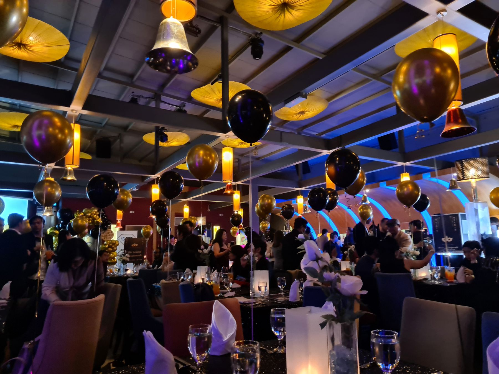
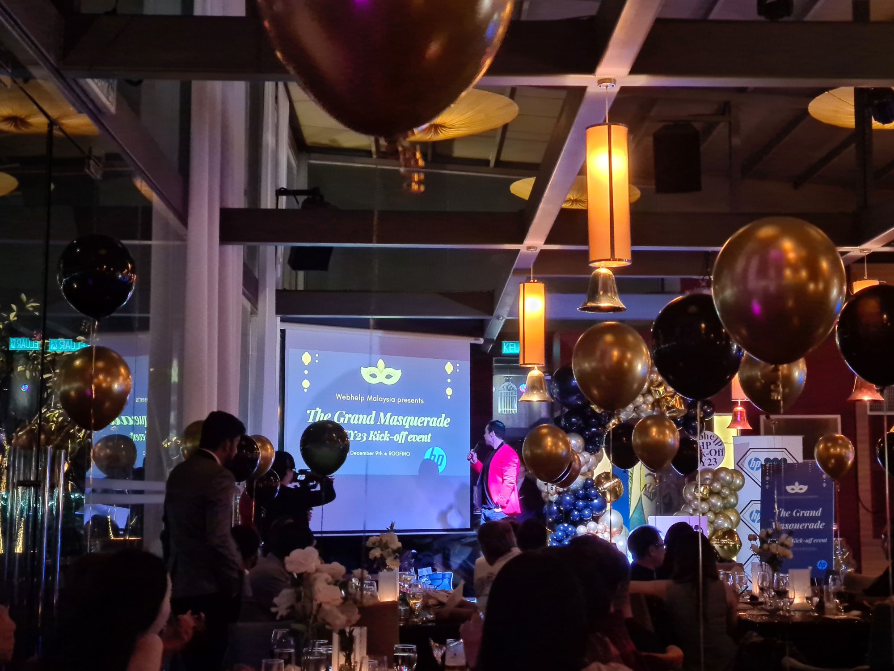
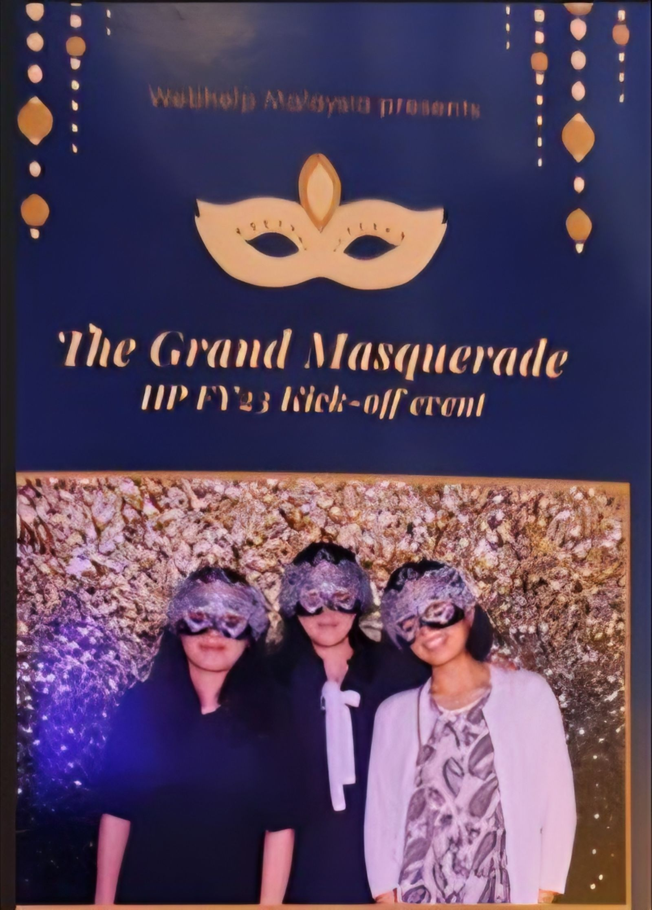
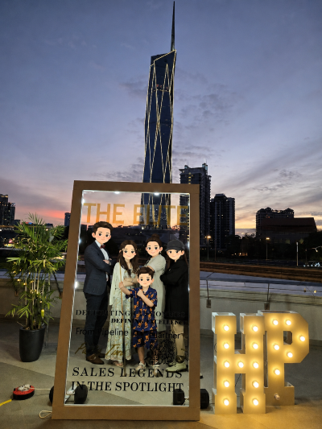
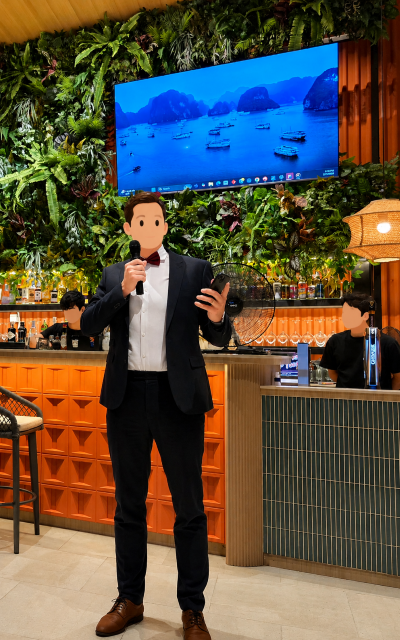

Not every memory becomes a story. Some remain as photographs — small celebrations, familiar faces, and moments shared between ordinary working days.





Living abroad often feels like a collection of small moments. A dinner after work, a company celebration, conversations that continue long after the music ends, and friendships that quietly become part of everyday life. Looking back, it is often these ordinary moments that stay in memory the longest.